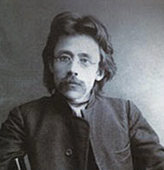

Musa (Bekuf) Carullah Bigivi (1875-1949)

Musa, 1875 yýlýnda Don Irmaðý kýyýlarýnda Rostov-Na Don þehrinde doðdu. Babasý Yarullah Efendi ve annesi de Fatýma Hanýmdýr. Ýlk derslerini annesinden aldý. On bir yaþýnda iken Teknik Lise'ye girdi. Yüksek öðrenimini ise Buhara'da yaptý. Burada Arapça, Farsça dillerini ve Ýslâm ilimlerini öðrendi. Bunlarýn dýþýnda Felsefe, matematik, astronomi derslerini de okudu. Öðrenciliði sýrasýnda bazý eserleri Rusça'dan Türkçe'ye çevirdi.Musa, Buhara'daki eðitiminden sonra Ýstanbul'a geldi. Ýlk önce Mühendislik Mektebi'ne kaydýný yaptýrdýysa da, yakýnlarýnýn ve hocalarýnýn tavsiyesiyle yeniden Ýslâm ilimlerine yöneldi. Ýstanbul'dan sonra Mýsýr'a gitti. Kahire'ye gittikten sonra El-Ezher Üniversitesi'ne kaydýný yaptýrdý. Bir süre burada okuduktan sonra ayrýldý. Akabinde özel araþtýrma ve çalýþmalara baþladý. Mýsýr'da bulunduðu sýralarda Muhammed Abduh'un derslerine de devam etti.
Mýsýr'dan sonra Hicaz'a giden Musa, burada da iki yýl kaldý. Mekke ve Medine'de dini konularda bazý araþtýrmalarda bulundu. Buradaki çalýþmasýndan sonra Hindistan'a geçti. Hintli âlimlerle görüþ alýþ veriþinde bulundu. Hindistan'dan sonra bir kez daha Kahire'ye gitti. Bu gidiþinde de üç yýl kaldý. Daha sonra Beyrut üzerinden Þam'a gitti. Ýslâm beldelerini içine alan bu seyahati on bir yýl sürdü. 1904 yýlýnda Memleketi Kazan'a geri döndü.
Musa, 1905 yýlýnda, daha önce Kahire'de tanýþmýþ bulunduðu Ýbrahim Þevket Kemal Efendi'nin kýz kardeþi Esma Aliye Haným ile evlendi. Bu evlilikten sonra sekiz çocuk sahibi oldu. Ýlme ve okumaya olan ilgisi devam etti. Ailesini býrakarak Petersburg'a gitti ve burada Hukuk Fakültesi'ne baþladý. Rus-Japon savaþýndan sonra ülkede yapýlan bazý deðiþiklikler ve özgürlüklerin arttýrýlacaðýna dair ümitlerden etkilendi. Rusya dahilinde yaþayan Kazan Türklerine de bazý siyasî ve dinî hürriyetlerin verileceðini ümit etti. Bu maksat için bazý faaliyetlerde bulundu. Yine bu gaye ile Ülfet Gazetesi'ni neþretmeye baþladý. Gerek gazete yayýnlarý, gerekse giriþtiði faaliyetler ve siyasî parti kurulmasýna yönelik çalýþmalar Rus çarlýðýný rahatsýz etti. Nitekim, bir süre sonra gazetesi kapatýldýðý gibi, baskýlar yeniden artmaya baþladý. Bu tarihten sonra kendisi için bir bakýma sürgün dönemi baþladý.
Musa Carullah, Rusya'daki son geliþmelerden sonra, dünyanýn deðiþik ülkelerini dolaþmaya baþladý. Japonya, Hindistan, Mýsýr ve Almanya'ya çok sayýda seyahat gerçekleþtirdi. Bu arada araþtýrmalarýný da devam ettirdi. Tüm çalýþmalarý sonucunda yüz yirmiyi aþan sayýda eser yazdý. 1949 yýlýnda Kahire'de vefat etti.
Musa Carullah, diðer bazý son dönem Ýslâm âlimleri ile birlikte yenilikçi kabul edilmekle birlikte, yöntem bakýmýndan bunlardan farklý hareket etmiþtir. Fikirlerini büyük ekseriyetle içtihada dayandýrmýþ, tarihin her döneminde ortaya çýkmýþ bulunan problemlerin, Ýslâm'ýn evrensel mesajlarýyla çözümlenebileceðini savunmuþtur. Ancak, içtihadý, nasslardan hüküm çýkarmak yerine, Ýslâm'ýn hayatla baðlantýsýnýn kurulmasý gerektiðini savunmuþtur. Ýslâm'ýn, dini ýslahata ihtiyacý olmadýðýný; sosyal, dini ve siyasi hastalýklarýn Ýslâm'da deðil, özümüzde olduðunu ileri sürmüþtür.
Musa Carullah'ýn en çok eleþtiri konusu olan düþüncesi ve görüþü; "Rahmet-i Ýlâhiye'nin Umumiyeti" konusu olmuþtur. Ýlâhî rahmetin; mü’min, kâfir herkesi kuþattýðýný, hiçbir kimsenin ebediyen cehennemde kalmayacaðýný savunmuþtur. (Mehmet Görmez, Musa Carullah Bigiyef, TDV., Ankara, 1994, s. 153-154). Orenburg Hüseyniye Medresesi'ndeki hocalýðý sýrasýnda ileri sürdüðü bu görüþ yüzünden çok sert tepki görmüþ ve iþinden ayrýlmak zorunda kalmýþtýr.
Musa Carullah'a en büyük tepki Þeyhülislamlýktan gelmiþtir. 25 Mart 1913 tarihinde Ýçiþlerine gönderilen yazýda, "Musa Carullah'ýn Rahmet-i Ýlahiye Bürhanlarý, Ýnsanlarýn Akide-i Ýlâhiyelerine Bir Nazar, Uzun Günlerde Rûze ve Kavaid-i Fýkhiye adlý kitaplarýnýn küfriyatý muhtevi olup, ehl-i Ýslâmý iðfal kasdýyla telif kýlýndýðý, buna göre nerede bulunursa bu kitaplarýn müsaderesi lüzumu bildirilmiþtir." (Mehmet Görmez, age., s. 178).
Musa Carullah ile Mustafa Sabri Efendi arasýnda fikri tartýþmalar yaþanmýþtýr. Mustafa Sabri Efendi, Kur'an'dan aldýðý ifadelerle Carullah'ýn fikirleri karþýsýnda daha güçlü ifadeler kullanarak Hud Sûresinin 106 ve107. âyetlerini göstermiþtir; "Þaki olanlara gelince onlar ateþe gireceklerdir. …Rabb'inin dilediði hariç, onlar yer ve gökler durdukça o ateþte ebedî kalacaklardýr. Çünkü Allah dilediðini yapar." Carullah, yer ve gök ebedi olmayacaðýna göre, ateþ de ebedî olmayacaktýr, demiþtir. M. Sabri Efendi ise âyetteki kaydýn azaba deðil, azap çekenlerle ilgili olduðunu vurgular. Carullah'ýn anladýðý gibi, "Allah isterse azab eder" deðil, Allah dilediðine azab eder demektir." (age., s. 160)
Musa Carullah ile Mustafa Sabri Efendi arasýnda cereyan eden tartýþma Bediüzzaman'a da sorulmuþ ve hangisinin haklý olduðunun açýklanmasý istenmiþtir. Bu soru üzerine þu cevabý vermiþtir:
"Mustafa Sabri ile Mûsâ Bekûf'un efkârlarýný muvazene etmek için vaktim müsait deðildir. Yalnýz bu kadar derim ki: Birisi ifrat etmiþ, diðeri tefrit ediyor. Mustafa Sabri gerçi müdafaatýnda Mûsâ Bekûf'a nisbeten haklýdýr; fakat Muhyiddin gibi ulûm-u Ýslâmiyenin bir mucizesi bulunan bir zâtý tezyifte haksýzdýr. Evet, Muhyiddin, kendisi hâdî ve makbuldür. Fakat her kitabýnda mühdî ve mürþid olamýyor. Hakaikte çok zaman mizansýz gittiðinden, kavâid-i Ehl-i Sünnete muhalefet ediyor ve bazý kelâmlarý zâhirî dalâlet ifade ediyor… bazen kelâm küfür görünür, fakat sahibi kâfir olamaz. Mustafa Sabri bu noktalarý nazara almamýþ, kavâid-i Ehl-i Sünnete taassup cihetiyle bazý noktalarda tefrit etmiþ. Mûsâ Bekûf ise, ziyade teceddüde taraftar ve asrîliðe mümâþâtkâr efkârýyla çok yanlýþ gidiyor. Bazý hakaik-i Ýslâmiyeyi yanlýþ tevillerle tahrif ediyor. Ebu'l-Âlâ-yý Maarrî gibi merdut bir adamý muhakkikînlerin fevkinde tuttuðundan ve kendi efkârýna uygun gelen Muhyiddin'in Ehl-i Sünnete muhalefet eden meselelerine ziyade taraftarlýðýndan, ziyade ifrat ediyor." (Lem'alar, s. 272-273) Musa Carullah, yaþadýðý dönemde topluma sirayet eden hastalýklarýn tedavi edilmesi yolunda çaba sarf etmiþ ancak, Bediüzzaman'ýn ifade ettiði þekliyle, ifrata tefritle cevap vermiþtir. Bu hareketin etkisiyle batýl düþünce ve hurafelere savaþ açan Carullah, bütün inanç ve akidelere hoþgörü ile bakmaya baþlamýþtýr (Mehmet Görmez, age., s. 159).